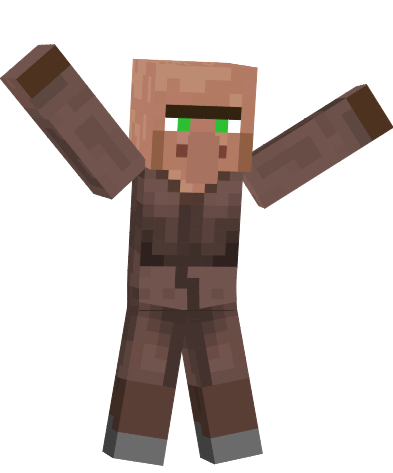
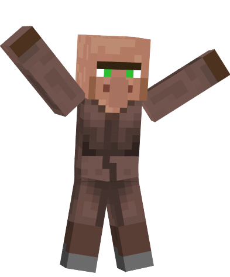
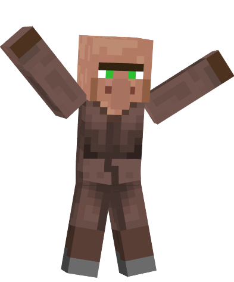
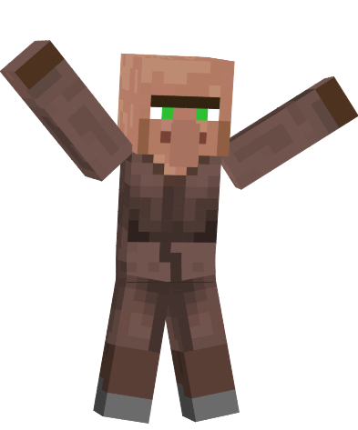

 

Minecraft plonge le joueur dans un monde cree de maniere procedurale, compose de pixels (des cubes) representant differents materiaux comme de la terre, du sable, de la pierre, de l'eau, de la lave ou des minerais (du fer, de l'or, du charbon, etc.) formant diverses structures (arbres, cavernes, montagnes, temples).
Le monde est egalement habite par des animaux ou monstres tels que des vaches, des moutons, des zombies et des squelettes. Le joueur peut modifier cet ensemble a volonte en y ajoutant ou supprimant des blocs et en tentant de survivre le plus longtemps possible, ces possibilites lui permettant ainsi de batir des constructions avec une grande liberte, rappelant les jeux de creation Lego.
Le joueur est represente sous une forme humanoide sans sexe defini, avec un pseudonyme demande lors de l'achat du jeu. Son apparence peut etre personnalisee sur le site officiel ou dans le jeu, mais il est par defaut nommee Steve et vetu d'un jean bleu et d'une veste turquoise, ou Alex et portant un jean marron, un chandail vert et de longs cheveux roux.
La vue par defaut du joueur est la premiere personne, qu'il peut faire passer en deuxieme personne et troisieme personne dans les options. Il possede une jauge de sante de vingt points de vie ainsi qu'une jauge de nourriture. Si sa barre de vie atteint 0, le joueur meurt en relachant ses objets et ressuscite a son premier point d'apparition dans le monde ou a cote du dernier lit dans lequel il a dormi (il peut aussi apparaitre a l'emplacement de son ancre de reapparition dans le monde du Nether, endroit ou dormir dans un lit le fait exploser, tuant le joueur par la meme occasion ).
Le joueur, par defaut droitier, peut utiliser ses deux mains, mais seule la main de preference peut effectuer des actions telles que combattre, casser ou poser des blocs. Il possede un inventaire de 27 cases, chacune pouvant contenir jusqu'a 64 objets d'un meme type (un stack), ainsi qu'une barre d'acces rapide de neuf cases (l'inventaire rapide), en plus d'une case pour la seconde main. Dans son inventaire, il peut fabriquer des objets grace a une grille de fabrication de deux cases sur deux (ne permettant pas de fabriquer tous les objets) ou enfiler une armure.
Bien que le jeu ne se termine jamais a proprement parler, il possede une fin officielle : il s'agit d'un long dialogue entre deux personnages qui s'affiche quand le joueur a tue l'Ender Dragon, un boss vivant dans la dimension de l'End, dimension qui propose un defi reserve aux joueurs chevronnes a cause de sa difficulte et du fait que l'End n'est accessible qu'a la fin de nombreux prerequis. Apres cette scene, le joueur reapparait a la surface et peut continuer a jouer normalement.
Bien que le jeu ne se termine jamais a proprement parler, il possede une fin officielle : il s'agit d'un long dialogue entre deux personnages qui s'affiche quand le joueur a tue l'Ender Dragon, un boss vivant dans la dimension de l'End, dimension qui propose un defi reserve aux joueurs chevronnes a cause de sa difficulte et du fait que l'End n'est accessible qu'a la fin de nombreux prerequis. Apres cette scene, le joueur reapparait a la surface et peut continuer a jouer normalement.
Il est egalement possible de "terminer" Minecraft en collectant tous les trophees ou en rassemblant un exemplaire de chaque matiere ou chaque objet du jeu recuperable en survie par exemple. Selon l'imagination et la patience du joueur Minecraft ne possede pas de limite.
| Date de sortie | Version majeure | Derniere version mineure | Nom |
| 12 janvier 2012 | 1.1 | 1.1.0 | Mise a jour de l'aventure (Partie 2) |
| 1er mars 2012 | 1.2 | 1.2.5 | Mise a jour de l'aventure (Partie 3) |
| 1er aout 2012 | 1.3 | 1.3.2 | Mise a jour de l'aventure (Partie 4) |
| 5 octobre 2012 | 1.4 | 1.4.7 | La mise a jour assez effrayante |
| 13 mars 2013 | 1.5 | 1.5.2 | Mise a jour de la redstone |
| 1er juillet 2013 | 1.6 | 1.6.4 | Mise a jour des chevaux |
| 25 octobre 2013 | 1.7 | 1.7.10 | La mise a jour qui a change le monde |
| 2 septembre 2014 | 1.8 | 1.8.9 | La genereuse mise a jour (derniere avec Notch) |
| 29 fevrier 2016 | 1.9 | 1.9.4 | Mise a jour des combats |
| 8 juin 2016 | 1.10 | 1.10.2 | Mise a jour Frostburn |
| 14 novembre 2016 | 1.11 | 1.11.2 | Mise a jour de l'exploration |
| 7 juin 2017 | 1.12 | 1.12.2 | Mise a jour du monde de la couleur |
| 18 juillet 2018 | 1.13 | 1.13.2 | Mise a jour aquatique |
| 23 avril 2019 | 1.14 | 1.14.4 | Village et pillage |
| 10 decembre 2019 | 1.15 | 1.15.2 | Abeilles bourdonnantes |
| 24 juin 2020 | 1.16 | 1.16.5 | Mise a jour du Nether |
| 8 juin 2021 | 1.17 | 1.17.1 | Cavernes et falaises (Partie 1) |
| 30 novembre 2021 | 1.18 | 1.18.1 | Cavernes et falaises (Partie 2) |
| 2022 (prevue) | 1.19 | Inconnue | Mise a jour sauvage |